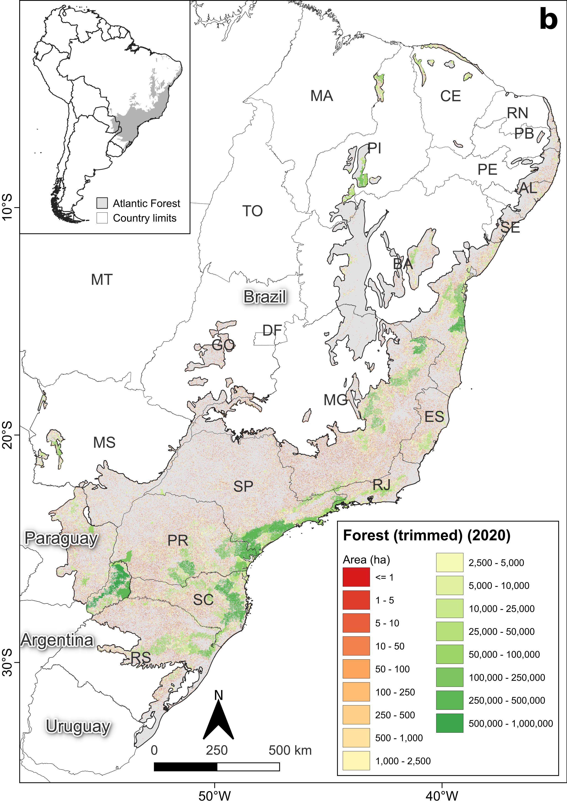
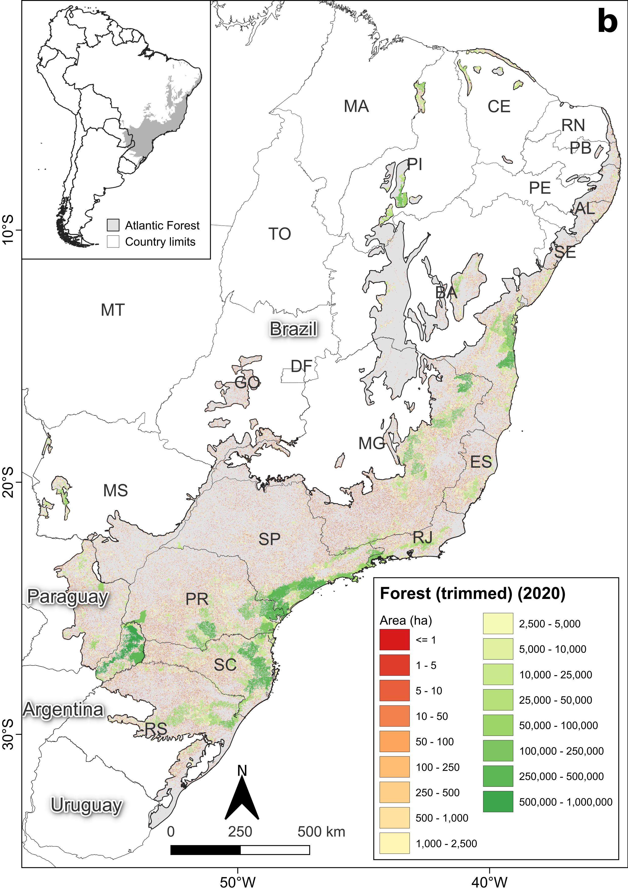

| metric | name | type | level | function_name |
|---|---|---|---|---|
| area | patch area | area and edge metric | patch | lsm_p_area |
| cai | core area index | core area metric | patch | lsm_p_cai |
| circle | related circumscribing circle | shape metric | patch | lsm_p_circle |
| contig | contiguity index | shape metric | patch | lsm_p_contig |
| core | core area | core area metric | patch | lsm_p_core |
| enn | euclidean nearest neighbor distance | aggregation metric | patch | lsm_p_enn |
| frac | fractal dimension index | shape metric | patch | lsm_p_frac |
| gyrate | radius of gyration | area and edge metric | patch | lsm_p_gyrate |
| ncore | number of core areas | core area metric | patch | lsm_p_ncore |
| para | perimeter-area ratio | shape metric | patch | lsm_p_para |
| perim | patch perimeter | area and edge metric | patch | lsm_p_perim |
| shape | shape index | shape metric | patch | lsm_p_shape |
| ai | aggregation index | aggregation metric | class | lsm_c_ai |
| area_cv | patch area | area and edge metric | class | lsm_c_area_cv |
| area_mn | patch area | area and edge metric | class | lsm_c_area_mn |
| area_sd | patch area | area and edge metric | class | lsm_c_area_sd |
| ca | total (class) area | area and edge metric | class | lsm_c_ca |
| cai_cv | core area index | core area metric | class | lsm_c_cai_cv |
| cai_mn | core area index | core area metric | class | lsm_c_cai_mn |
| cai_sd | core area index | core area metric | class | lsm_c_cai_sd |
| circle_cv | related circumscribing circle | shape metric | class | lsm_c_circle_cv |
| circle_mn | related circumscribing circle | shape metric | class | lsm_c_circle_mn |
| circle_sd | related circumscribing circle | shape metric | class | lsm_c_circle_sd |
| clumpy | clumpiness index | aggregation metric | class | lsm_c_clumpy |
| cohesion | patch cohesion index | aggregation metric | class | lsm_c_cohesion |
| contig_cv | contiguity index | shape metric | class | lsm_c_contig_cv |
| contig_mn | contiguity index | shape metric | class | lsm_c_contig_mn |
| contig_sd | contiguity index | shape metric | class | lsm_c_contig_sd |
| core_cv | core area | core area metric | class | lsm_c_core_cv |
| core_mn | core area | core area metric | class | lsm_c_core_mn |
| core_sd | core area | core area metric | class | lsm_c_core_sd |
| cpland | core area percentage of landscape | core area metric | class | lsm_c_cpland |
| dcad | disjunct core area density | core area metric | class | lsm_c_dcad |
| dcore_cv | disjunct core area | core area metric | class | lsm_c_dcore_cv |
| dcore_mn | disjunct core area | core area metric | class | lsm_c_dcore_mn |
| dcore_sd | disjunct core area | core area metric | class | lsm_c_dcore_sd |
| division | division index | aggregation metric | class | lsm_c_division |
| ed | edge density | area and edge metric | class | lsm_c_ed |
| enn_cv | euclidean nearest neighbor distance | aggregation metric | class | lsm_c_enn_cv |
| enn_mn | euclidean nearest neighbor distance | aggregation metric | class | lsm_c_enn_mn |
| enn_sd | euclidean nearest neighbor distance | aggregation metric | class | lsm_c_enn_sd |
| frac_cv | fractal dimension index | shape metric | class | lsm_c_frac_cv |
| frac_mn | fractal dimension index | shape metric | class | lsm_c_frac_mn |
| frac_sd | fractal dimension index | shape metric | class | lsm_c_frac_sd |
| gyrate_cv | radius of gyration | area and edge metric | class | lsm_c_gyrate_cv |
| gyrate_mn | radius of gyration | area and edge metric | class | lsm_c_gyrate_mn |
| gyrate_sd | radius of gyration | area and edge metric | class | lsm_c_gyrate_sd |
| iji | interspersion and juxtaposition index | aggregation metric | class | lsm_c_iji |
| lpi | largest patch index | area and edge metric | class | lsm_c_lpi |
| lsi | landscape shape index | aggregation metric | class | lsm_c_lsi |
| mesh | effective mesh size | aggregation metric | class | lsm_c_mesh |
| ndca | number of disjunct core areas | core area metric | class | lsm_c_ndca |
| nlsi | normalized landscape shape index | aggregation metric | class | lsm_c_nlsi |
| np | number of patches | aggregation metric | class | lsm_c_np |
| pafrac | perimeter-area fractal dimension | shape metric | class | lsm_c_pafrac |
| para_cv | perimeter-area ratio | shape metric | class | lsm_c_para_cv |
| para_mn | perimeter-area ratio | shape metric | class | lsm_c_para_mn |
| para_sd | perimeter-area ratio | shape metric | class | lsm_c_para_sd |
| pd | patch density | aggregation metric | class | lsm_c_pd |
| pladj | percentage of like adjacencies | aggregation metric | class | lsm_c_pladj |
| pland | percentage of landscape | area and edge metric | class | lsm_c_pland |
| shape_cv | shape index | shape metric | class | lsm_c_shape_cv |
| shape_mn | shape index | shape metric | class | lsm_c_shape_mn |
| shape_sd | shape index | shape metric | class | lsm_c_shape_sd |
| split | splitting index | aggregation metric | class | lsm_c_split |
| tca | total core area | core area metric | class | lsm_c_tca |
| te | total edge | area and edge metric | class | lsm_c_te |
| ai | aggregation index | aggregation metric | landscape | lsm_l_ai |
| area_cv | patch area | area and edge metric | landscape | lsm_l_area_cv |
| area_mn | patch area | area and edge metric | landscape | lsm_l_area_mn |
| area_sd | patch area | area and edge metric | landscape | lsm_l_area_sd |
| cai_cv | core area index | core area metric | landscape | lsm_l_cai_cv |
| cai_mn | core area index | core area metric | landscape | lsm_l_cai_mn |
| cai_sd | core area index | core area metric | landscape | lsm_l_cai_sd |
| circle_cv | related circumscribing circle | shape metric | landscape | lsm_l_circle_cv |
| circle_mn | related circumscribing circle | shape metric | landscape | lsm_l_circle_mn |
| circle_sd | related circumscribing circle | shape metric | landscape | lsm_l_circle_sd |
| cohesion | patch cohesion index | aggregation metric | landscape | lsm_l_cohesion |
| condent | conditional entropy | complexity metric | landscape | lsm_l_condent |
| contag | connectance | aggregation metric | landscape | lsm_l_contag |
| contig_cv | contiguity index | shape metric | landscape | lsm_l_contig_cv |
| contig_mn | contiguity index | shape metric | landscape | lsm_l_contig_mn |
| contig_sd | contiguity index | shape metric | landscape | lsm_l_contig_sd |
| core_cv | core area | core area metric | landscape | lsm_l_core_cv |
| core_mn | core area | core area metric | landscape | lsm_l_core_mn |
| core_sd | core area | core area metric | landscape | lsm_l_core_sd |
| dcad | disjunct core area density | core area metric | landscape | lsm_l_dcad |
| dcore_cv | disjunct core area | core area metric | landscape | lsm_l_dcore_cv |
| dcore_mn | disjunct core area | core area metric | landscape | lsm_l_dcore_mn |
| dcore_sd | disjunct core area | core area metric | landscape | lsm_l_dcore_sd |
| division | division index | aggregation metric | landscape | lsm_l_division |
| ed | edge density | area and edge metric | landscape | lsm_l_ed |
| enn_cv | euclidean nearest neighbor distance | aggregation metric | landscape | lsm_l_enn_cv |
| enn_mn | euclidean nearest neighbor distance | aggregation metric | landscape | lsm_l_enn_mn |
| enn_sd | euclidean nearest neighbor distance | aggregation metric | landscape | lsm_l_enn_sd |
| ent | shannon entropy | complexity metric | landscape | lsm_l_ent |
| frac_cv | fractal dimension index | shape metric | landscape | lsm_l_frac_cv |
| frac_mn | fractal dimension index | shape metric | landscape | lsm_l_frac_mn |
| frac_sd | fractal dimension index | shape metric | landscape | lsm_l_frac_sd |
| gyrate_cv | radius of gyration | area and edge metric | landscape | lsm_l_gyrate_cv |
| gyrate_mn | radius of gyration | area and edge metric | landscape | lsm_l_gyrate_mn |
| gyrate_sd | radius of gyration | area and edge metric | landscape | lsm_l_gyrate_sd |
| iji | interspersion and juxtaposition index | aggregation metric | landscape | lsm_l_iji |
| joinent | joint entropy | complexity metric | landscape | lsm_l_joinent |
| lpi | largest patch index | area and edge metric | landscape | lsm_l_lpi |
| lsi | landscape shape index | aggregation metric | landscape | lsm_l_lsi |
| mesh | effective mesh size | aggregation metric | landscape | lsm_l_mesh |
| msidi | modified simpson’s diversity index | diversity metric | landscape | lsm_l_msidi |
| msiei | modified simpson’s evenness index | diversity metric | landscape | lsm_l_msiei |
| mutinf | mutual information | complexity metric | landscape | lsm_l_mutinf |
| ndca | number of disjunct core areas | core area metric | landscape | lsm_l_ndca |
| np | number of patches | aggregation metric | landscape | lsm_l_np |
| pafrac | perimeter-area fractal dimension | shape metric | landscape | lsm_l_pafrac |
| para_cv | perimeter-area ratio | shape metric | landscape | lsm_l_para_cv |
| para_mn | perimeter-area ratio | shape metric | landscape | lsm_l_para_mn |
| para_sd | perimeter-area ratio | shape metric | landscape | lsm_l_para_sd |
| pd | patch density | aggregation metric | landscape | lsm_l_pd |
| pladj | percentage of like adjacencies | aggregation metric | landscape | lsm_l_pladj |
| pr | patch richness | diversity metric | landscape | lsm_l_pr |
| prd | patch richness density | diversity metric | landscape | lsm_l_prd |
| relmutinf | relative mutual information | complexity metric | landscape | lsm_l_relmutinf |
| rpr | relative patch richness | diversity metric | landscape | lsm_l_rpr |
| shape_cv | shape index | shape metric | landscape | lsm_l_shape_cv |
| shape_mn | shape index | shape metric | landscape | lsm_l_shape_mn |
| shape_sd | shape index | shape metric | landscape | lsm_l_shape_sd |
| shdi | shannon’s diversity index | diversity metric | landscape | lsm_l_shdi |
| shei | shannon’s evenness index | diversity metric | landscape | lsm_l_shei |
| sidi | simpson’s diversity index | diversity metric | landscape | lsm_l_sidi |
| siei | simspon’s evenness index | diversity metric | landscape | lsm_l_siei |
| split | splitting index | aggregation metric | landscape | lsm_l_split |
| ta | total area | area and edge metric | landscape | lsm_l_ta |
| tca | total core area | core area metric | landscape | lsm_l_tca |
| te | total edge | area and edge metric | landscape | lsm_l_te |
Introdução a métricas de paisagem no R
SynEco - I Simpósio Brasileiro de Síntese Ecológica
27 de novembro de 2024
Slides
Explicando os slides
Este é um link no slide

Maurício Vancine
- Ecólogo e Doutor em Ecologia
- Pós-Doutorado em Ecologia Espacial (Prof. Mathias - Unicamp)
- Ecologia Espacial
- Modelagem Ecológica
- Análise de Dados Ecológicos e Espaciais
- Ecologia e Conservação de Anfíbios
- Open source (R, QGIS, GNU/Linux)
Análises Ecológicas no R (2022)
Artigo da Mata Atlântica

 


Material
Todo o material está disponível no GitHub

Contextualização

Contextualização

Ecologia da paisagem
Enfatiza as causas e consequências da heterogeneidade espacial em várias escalas (padrão espacial) sobre um ou vários processos ecológicos (e.g. predação, dispersão, polinização)

Ecologia da paisagem
Ecologia da Paisagem e Padrões/Processos Ecológicos

Definição de paisagem
(…) um mosaico heterogêneo formado por unidades interativas, sendo esta heterogeneidade existente para pelo menos um fator, segundo um observador e numa determinada escala de observação

Heterogeneidade, escala e organismos

Heterogeneidade, escala e organismos

Elementos da paisagem
- Mancha (patch): porções de habitat
- Corredor (corridor): porção linear que liga outras manchas
- Matriz (matriz): porções de não-habitat (classe dominante)

Morfologia da paisagem

1. Interior (core): porção interior de habitat
2. Borda (edge): porção exterior de habitat
3. Corredor (corridor): porção linear que liga manchas
4. Ramificação (branch): porção anexa de habitat
5. Trampolim (stepping stone): porção isolada de habitat
6. Perfuração (perforation): borda interna dentro das manchas
Mudanças da paisagem (Processos)

Mudanças da paisagem (Estrutura)

Métricas de paisagem
Algoritmos para quantificar a estrutura espacial (características) da paisagem para uma área geográfica

Tipos de métricas
- Classificação categórica (composição e configuração)
- Representação de grafos (conectância e redes)
- Classificação de gradientes (NDVI, rugosidade, etc.)

Métricas de classificação categóricas
Composição: número e quantidade das manchas (número e área)
Configuração: arranjo espacial e distribuição das manchas (isolamento e forma)

Métricas de classificação categóricas

Nível das métricas

Concepção de uma pesquisa

- Teoria ecológica: fenômenos, mecanismos, processos e padrões
- Observação, questões, hipóteses, predições
- Variáveis resposta (Y) e preditora (X)

Delineamento amostral
Delineamento amostral em Ecologia da Paisagem

- Definir as unidades amostrais
- Definir as métricas de paisagem
- Garantir um gradiente das métricas nas unidades amostrais
- Garantir indepedência entre as amostragens ou tratar isso estatisticamente (fator aleatório)
- Correlação entre as métricas
- Escala de efeito
Correlação entre as métricas

Escala de efeito


Geoprocessamento
Entender os padrões espaciais como o ambiente físico, fenômenos climáticos, humanos, sociais ou econômicos, a partir de dados dados espaciais para gerar informações espaciais

Geoprocessamento (Elementos)
- Cartografia digital (CD)
- Global Positioning System (GPS)
- Sensoriamento Remoto (RS)
- Sistemas de Informações Geográficas (SIG)

Cartografia
Escala
Relação entre a medida gráfica (representado no papel ou computador) e a medida real (objeto ou lugar)
d (distância gráfica): 0,01 m (1 cm)
D (distância real): 250 m
E (escala) = d / D = 0,01 m / 250 m
E = 1/25.000 ou 1:25.000

E = 0,45/13.600.000
E = 1/30.000.000
Cartografia
Sistema de coordenadas geográficas (graus)
1. Graus, minutos e segundos
Longitude: 42°42’42” O
Latitude: 23°23’23” S
2. Graus decimais
Longitude: -42.71167
Latitude: -23.38972
Conversão
42 + (42/60) + (42/3600) = 42.71167
23 + (23/60) + (23/3600) = 23.38972

Cartografia
Sistema de coordenadas projetadas (metros)


Cartografia
Sistema de coordenadas projetadas (metros)
Universal Transversa de Mercator (UTM)
X UTM: 706832 m E
Y UTM: 4344683 m N
Zona: 10S

Cartografia
Datum
Relação do sistema de coordenadas com a superfície da Terra
1. Geocêntricos
WGS84
SIRGAS2000
2. Topocêntricos
SAD69
Córrego Alegre

Cartografia
Sistema de Referência de Coordenadas (SRC)
Datum + Sistema de Coordenadas (geográfico ou projetado)

Global Positioning System (GPS)
Localização no planeta através de pontos ou linhas
- Satélites:
localização e altitude - Tipos de dados:
waypoint, route e track - Formatos:
.gpx e .kml ou .kmz

Global Positioning System (GPS)
Localização no planeta através de pontos ou linhas
- Satélites:
localização e altitude - Tipos de dados:
waypoint, route e track - Formatos:
.gpx e .kml ou .kmz

Sensoriamento Remoto
Obtenção de informações de alvos na Terra sem contato físico

Sistema de Informação Geográfica (SIG/GIS)
Conjunto de procedimentos utilizados para armazenar e manipular dados georeferenciados

Sistema de Informação Geográfica (SIG/GIS)
QGIS

Dados espaciais


Dados espaciais

Dados vetoriais
Pontos, linhas e polígonos

Dados vetoriais
Tabela de atributos

Dados vetoriais
Formato: Shapefile
.shp: contém as informações da feição (desenho)
.dbf: tabela que contém as informações (colunas) sobre cada feição (linhas)
.shx: arquivo de índice que une o .shp ao .dbf
.prj: contém as informações do sistema de referências de coordenadas

Dados matriciais (Raster)
Matriz de valores

Dados matriciais (Raster)
Matriz de valores - contínuos ou categóricos

Dados matriciais (Raster)
Propriedades - extensão e resolução

Dados matriciais (Raster)
Formato: GeoTiff
.tif: arquivo raster georreferenciado

Banco de dados espaciais
Formato: GeoPackage
.gpkg: arquivo de bando de dados espaciais

Conversão de dados espaciais
Converter vetor-raster e vice-versa

R
O R é uma linguagem de programação livre (open source), direcionada à manipulação, análise e visualização de dados, com diversas expansões (pacotes) para o uso de dados com formatos específicos


MapBiomas

Importar dados espaciais
Raster

Reprojeção
Vetor

Reprojeção
Raster

Diagrama de Sankey
Mudanças nas classes de uso e cobertura da terra

landscapemetrics
Implementação do FRAGSTATS para a linguagem R


landscapemetrics
Pacote no R para calcular métricas de paisagem com classes categóricas (raster categórico)
landscapemetrics
Nível das métricas
Mancha (patch): calculada para cada mancha na paisagem
Classe (classe): resume as manchas pertencentes a uma mesma classe
Paisagem (landscape): resume todas as manchas de todas as classes em um único valor

landscapemetrics
Regras de definição da manchas

landscapemetrics
Espacializar as métricas
Apenas para as métricas calculadas para manchas

Para saber mais
Live de métricas de paisagem no R

Muito obrigado!